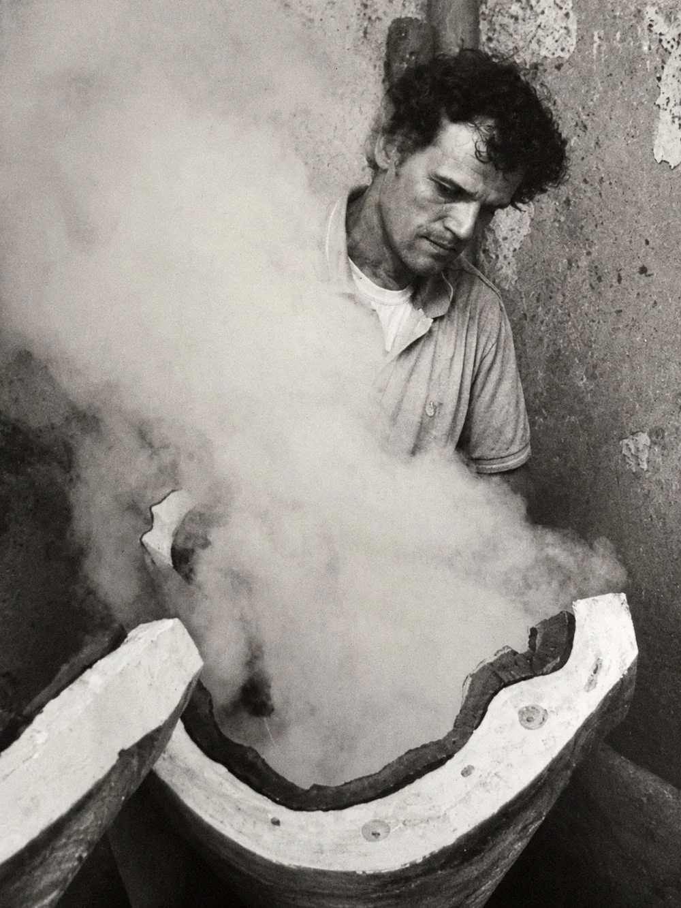
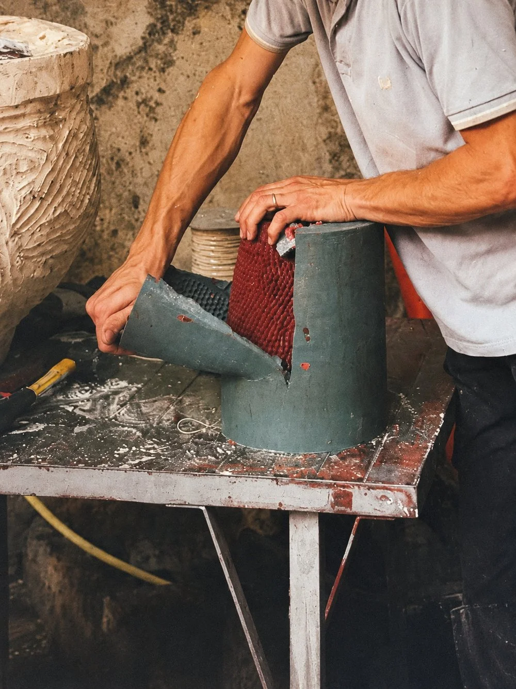
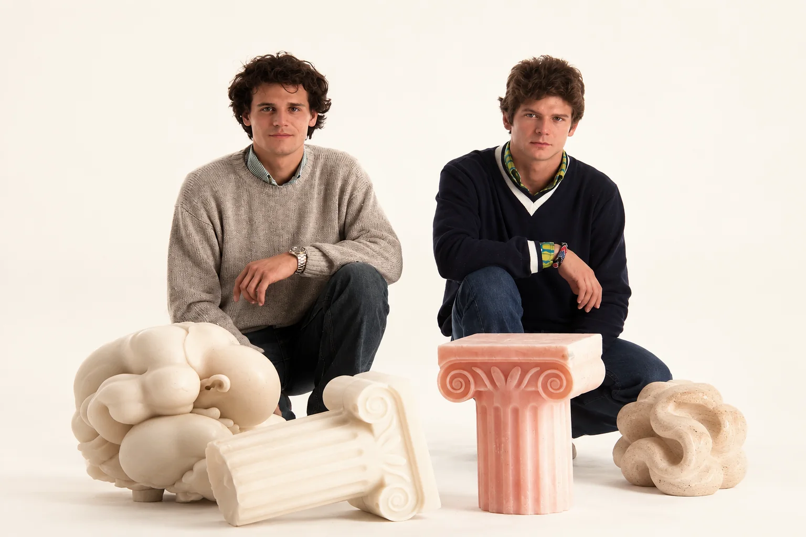

Una famiglia, tre generazioni
Tutto comincia con Luigi Cicogna: prima il lucido da scarpe, poi la cera. Tra gli anni Venti e Quaranta nasce la Cereria Luigi Cicogna, con lo stemma della cicogna e le iniziali L·C che accompagnano ancora oggi ogni candela. Un mestiere che non si impara sui manuali: si eredita, si affina, si porta avanti.
- Anni '20–'40
Da un'attività di lucido da scarpe, Luigi Cicogna dà vita alla Cereria Luigi Cicogna. Nasce lo stemma con la cicogna e le iniziali L·C.
- Gli anni della guerra
Lo stabilimento milanese di via Aleardi viene bombardato due volte. La ricostruzione arriva anche grazie al sostegno di Antonio Greppi, il “sindaco della ricostruzione”.
- 1960
Su impulso del giovane Luciano Cicogna, la fabbrica si trasferisce a Novate Milanese, in via Damiano Chiesa: la sede dove ancora oggi si lavora la cera.
- Anni '60–'70
Tra risparmi, debiti e impegni sempre onorati, i fratelli Luciano e Marco consolidano l'azienda, forti anche della guida dei vecchi maestri cerai.
- 1975
Luigi Cicogna, in laboratorio fino agli ottantatré anni, si spegne. Resta il suo mestiere, portato avanti dai figli Luciano e Marco.
- Oggi
La terza generazione, Fabio e Filippo Cicogna, porta avanti la tradizione: dalle grandi candele d'altare alla Home Collection.
Chi ha conosciuto la vecchia fabbrica ricorda la ruota di bicicletta all'ingresso, senza copertone e sollevata su due trespoli, con cui si filavano gli stoppini dei lumini; e in fondo, gli “stelloni”: grandi come ombrelli senza tela, facevano ruotare i ceri immersi a mano nella cera bollente, fino alla misura giusta per l'altare.

Le mani prima
delle macchine
Gli impianti garantiscono precisione e continuità; il giudizio delle persone garantisce che ogni lotto rispetti la qualità attesa. La selezione delle cere, il controllo del prodotto finito, il giudizio sul lotto: queste cose le fanno ancora le persone. E si vede.
Forme che
si tramandano
Dallo stampo alla candela: il momento in cui la forma si stacca e si vede se il lavoro è stato fatto bene. Stampi dedicati, forme esclusive, produzioni continuative — lo stesso approccio che offriamo ai brand con cui collaboriamo.

Cere selezionate
La selezione delle cere e il controllo del prodotto finito non si delegano: li fanno ancora le persone, lotto per lotto.
Il mestiere che si eredita
Tre generazioni hanno costruito un modo di fare che non si delega e non si automatizza del tutto.
Relazione diretta
Filippo e Fabio seguono personalmente i clienti: si ascolta prima di proporre, e si propone solo ciò che si è certi di poter mantenere.
